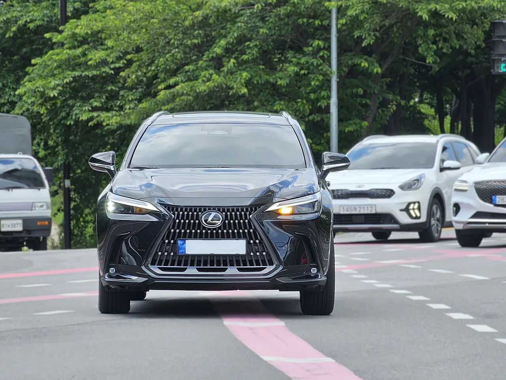
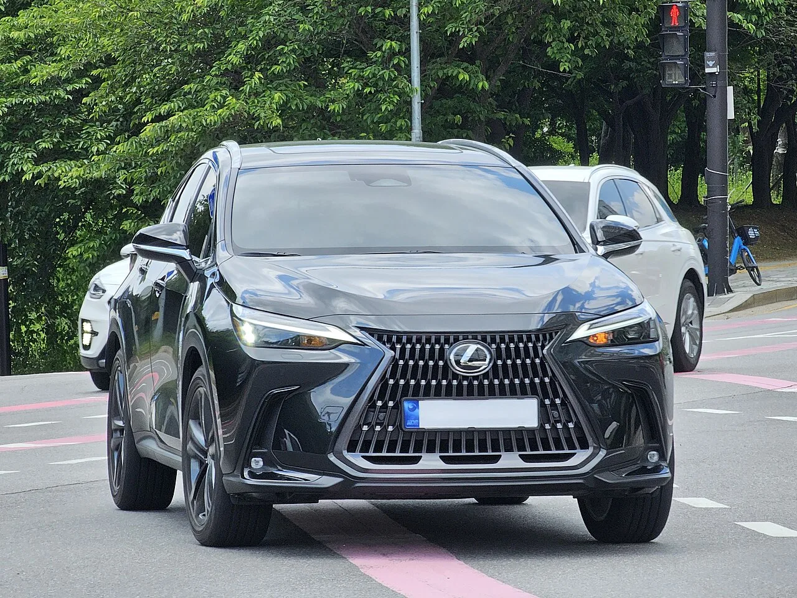
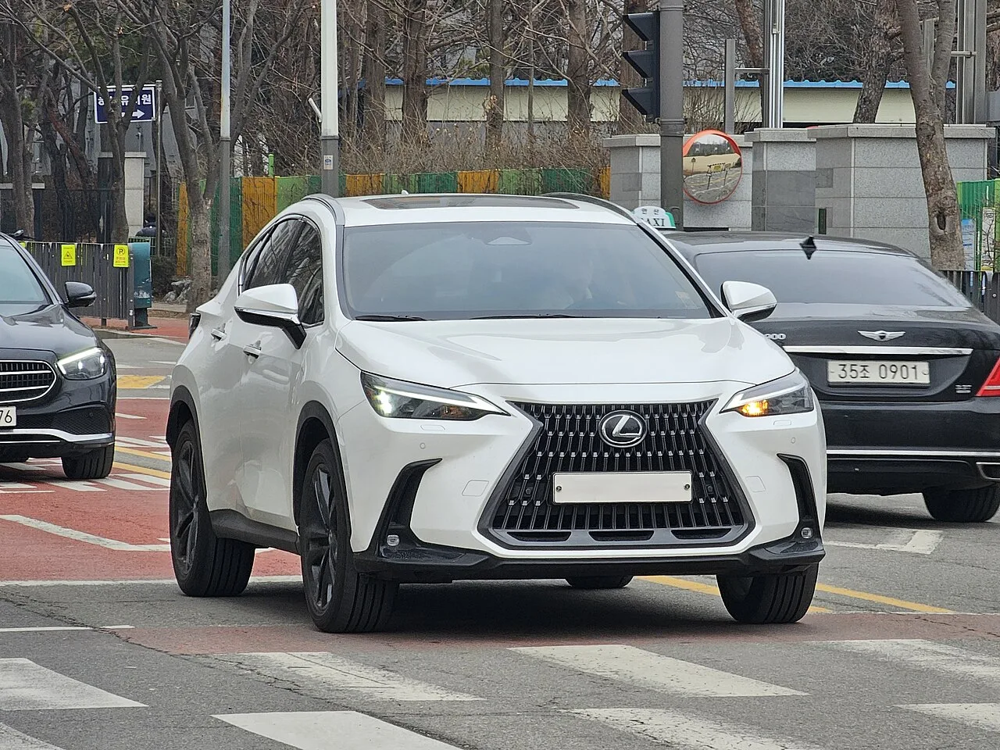

▲ 사진은 부분변경 이전 현행 NX 350h. 2027년형은 램프와 대시보드가 전면 재설계된다 ⓒ Wikimedia Commons
1. 무엇이 공개됐나
렉서스가 2027년형 NX 부분변경 모델을 공개했습니다. NX는 토요타 RAV4와 뼈대를 공유하는 렉서스의 중형 SUV로, 브랜드 판매의 큰 축을 담당하는 모델입니다.
부분변경이지만 손을 댄 범위가 넓습니다. 외관과 실내는 물론, 하이브리드 시스템 세대 자체가 바뀌었습니다.
글로벌 판매는 2026년 말 시작됩니다. 유럽 인도는 2027년 봄부터이고, 북미 가격과 출시 일정은 아직 공개되지 않았습니다.
2. 30mm 길어진 몸과 새 얼굴
전장이 30mm 늘어 4,690mm가 됐습니다. 새 LED 헤드램프가 조각된 스핀들 그릴과 이어지고, 범퍼에는 삼각형 흡기구가 들어갑니다.
후면은 L자 테일램프와 발광 배지 조합입니다. 발광 배지는 최근 프리미엄 브랜드가 앞다퉈 채택하는 요소로, 야간 식별성을 브랜드 자산으로 쓰는 방식입니다.

▲ 현행 NX의 스핀들 그릴. 2027년형은 헤드램프가 그릴과 이어지는 형태로 바뀐다 ⓒ Wikimedia Commons
크롬은 걷어냈습니다. 대신 새 휠 디자인과 색상이 들어갑니다. 소닉 플래티넘, 소닉 텔루스(카키 그린), 그리고 F 스포트 전용 티타늄 카바이드 그레이가 추가됩니다. F 스포트는 피아노 블랙 마감과 20인치 휠, 붉은 브레이크 캘리퍼를 갖습니다.
3. 대시보드를 다시 그렸다
실내는 대시보드를 통째로 재설계했습니다. 14인치 프리스탠딩 터치스크린과 12.3인치 디지털 계기판이 들어갑니다.
주목할 것은 새 햅틱 컨트롤입니다. 사용하지 않을 때는 대시보드 안으로 사라지고, 필요할 때 나타나는 방식입니다. 물리 버튼을 없애면서도 조작감을 남기려는 절충안입니다.
고급 트림에는 '렉서스 센서리 컨시어지'가 들어갑니다. 앰비언트 조명, 화면 패턴, 공조, 시트 열선, 실내 방향까지 한꺼번에 맞춰 주는 기능입니다. 실내 향기까지 포함한다는 점이 특징입니다.
그 외 클레이 레드와 프로미넌스 등 새 시트 색상, 친환경 우드 트림, 새 스티어링 휠, 재조정된 시트가 적용됩니다.
4. 실제로 바뀐 것 — 배터리와 출력
전 모델이 6세대 렉서스 하이브리드 기술로 넘어갑니다. 출력과 트랜스액슬을 통합한 구성입니다.
| 모델 | 출력 | 비고 |
|---|---|---|
| NX 450h+ (PHEV) | 288~322마력 | 배터리 23kWh, 전기 주행 100km(WLTP), DC 급속 지원 |
| NX 350h (HEV) | 188~241마력 | 2.5L, 전륜/사륜 |
| NX 300h (HEV) | 194마력 | 2.0L, 전륜 전용(일부 시장) |
가장 큰 변화는 450h+의 배터리입니다. Carscoops에 따르면 18kWh에서 23kWh로 커졌습니다. 이에 따라 전기만으로 100km(WLTP)를 달릴 수 있게 됐습니다.
여기서 주의할 점이 있습니다. 이번 공개는 글로벌 사양 기준이고, 매체마다 인용한 숫자가 다릅니다. CarBuzz는 450h+를 "최대 322마력"(현행 304마력), 전기 주행거리를 "40마일"(약 64km, EPA 기준)로, 300h는 "약 148마력"으로 전했습니다. 배터리 용량은 "더 커진 리튬이온 배터리"라고만 언급했습니다.
차이의 대부분은 측정 기준에서 나옵니다. WLTP와 EPA는 같은 차에서 다른 숫자를 만듭니다. 100km(WLTP)와 40마일(EPA)은 서로 모순되는 값이 아니라 시험 방식이 다른 값입니다. 300h 출력처럼 실제로 어긋나는 항목은 시장별 사양이 확정돼야 정리됩니다. 렉서스도 "미국 시장 세부 사양은 곧 공개한다"고 밝힌 상태입니다.
DC 급속 충전 지원도 새로 붙었습니다. 그동안 PHEV는 완속 충전만 되는 경우가 많았습니다. 급속이 되면 사용 패턴이 달라집니다. 출퇴근 중 20분 충전으로 다시 전기 주행 구간을 확보할 수 있기 때문입니다.

▲ 현행 NX. 2027년형은 전장이 30mm 늘고 후면에 L자 테일램프가 들어간다 ⓒ Wikimedia Commons
5. 10kg 가볍고 10cm 낮아진 액슬
플랫폼은 기존 TNGA-K를 유지하되 구조 강성을 높였습니다. 서스펜션 세팅과 전동식 파워스티어링을 다시 조율했고, 코너링 제동 시스템과 소음 차단이 강화됐습니다.
수치로 남은 개선은 eAxle입니다. 통합 설계로 무게를 10kg 줄이고 높이를 10cm 낮췄습니다.
높이 10cm는 생각보다 큰 숫자입니다. 구동 장치가 낮아지면 그만큼 실내 바닥이나 화물 공간을 확보할 여지가 생기고, 무게 중심도 내려갑니다. 부분변경에서 이런 수준의 하드웨어 변경이 들어가는 경우는 흔하지 않습니다.

▲ NX는 렉서스 판매의 큰 축을 맡는 모델이다. 그만큼 부분변경의 손질 범위도 넓었다 ⓒ Wikimedia Commons
6. 국내 소비자가 볼 지점
첫째, PHEV의 값어치가 달라집니다. 전기 주행 100km(WLTP)에 급속 충전까지 되면, 일상은 전기로 장거리는 엔진으로 쓰는 구성이 현실적으로 성립합니다. 다만 국내 인증 주행거리는 이보다 짧게 나올 가능성이 큽니다.
둘째, 국내 도입 트림이 관건입니다. NX 300h는 일부 시장 전용이고, 국내에는 350h와 450h+가 들어올 가능성이 큽니다. 어느 쪽이 주력이 되느냐에 따라 가격대가 갈립니다.
셋째, RAV4와의 관계입니다. NX는 RAV4와 기본 뼈대를 공유합니다. 같은 세대 하이브리드 기술이 RAV4에도 순차 적용될 가능성이 있어, 두 차의 가격 차이가 무엇을 사는 값인지 다시 계산해 볼 시점입니다.
넷째, 시기입니다. 글로벌 판매는 2026년 말, 유럽은 2027년 봄입니다. 국내 도입은 그 이후가 됩니다. 지금 현행 NX를 사려는 사람이라면 재고 할인 폭을 함께 보는 편이 좋습니다.
정리하면 이렇습니다. 이번 NX의 헤드라인은 새 얼굴이지만, 실제로 값을 만드는 변화는 배터리 5kWh 증가와 급속 충전 지원입니다. 이 둘이 PHEV라는 어정쩡했던 선택지를 다시 계산하게 만듭니다.